2026
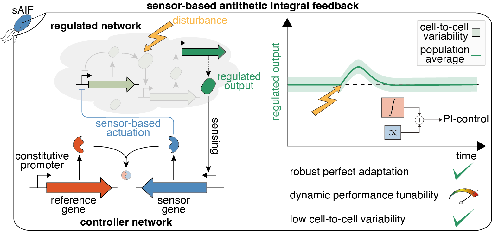
Engineering Sensor-Based Antithetic Integral Controllers for Enhanced Dynamic Performance and Noise Attenuation
Cell Systems, 2026, Link to Poster
Explore
Browse papers and preprints by research area, year, or keyword.

Cell Systems, 2026, Link to Poster
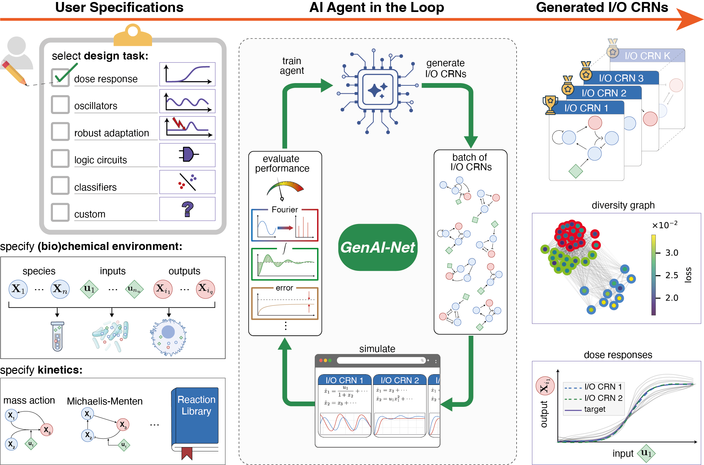
Science Advances, 2026
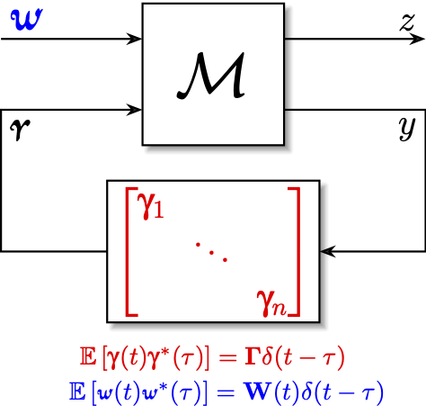
International Journal of Robust and Nonlinear Control, 2025
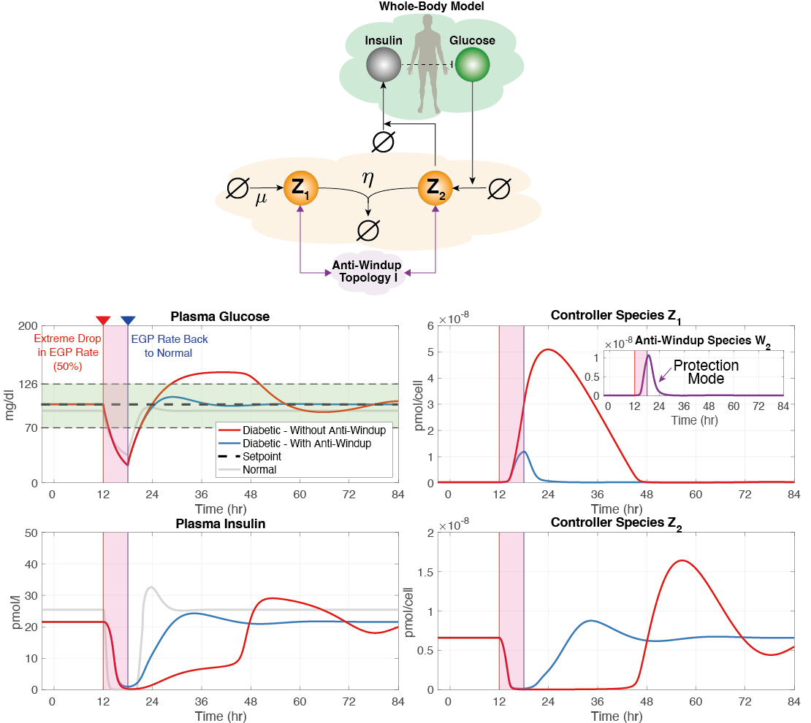
Science Advances, 2024
Biotechnology Advances, 2024
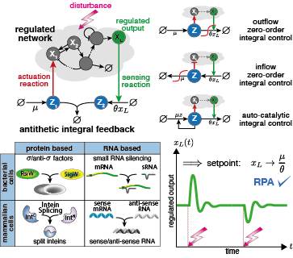
Current Opinion in Biotechnology, 2023
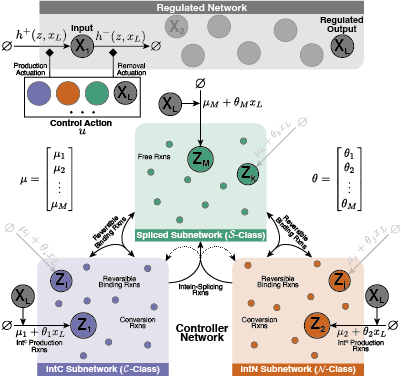
Nature Communications, 2023
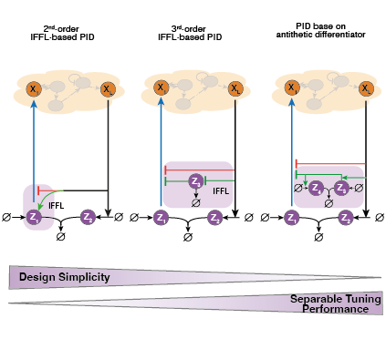
Nature Communications, 2022
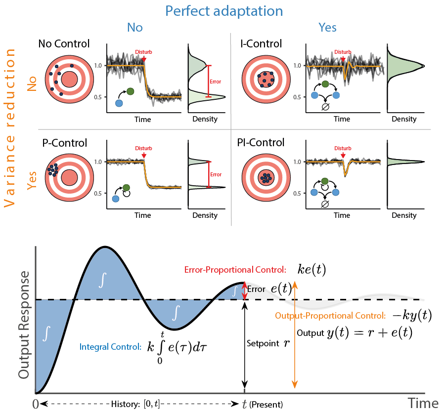
Proceedings of the National Academy of Sciences (PNAS), 2022
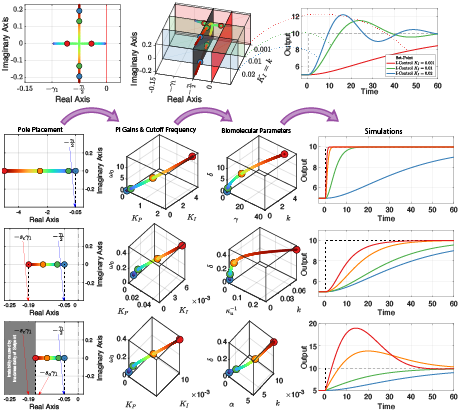
IEEE 61st Conference on Decision and Control (CDC), 2022

IEEE Transactions on Molecular, Biological and Multi-Scale Communications, 2020
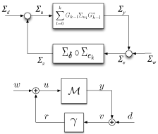
IEEE Transactions on Automatic Control, 2020
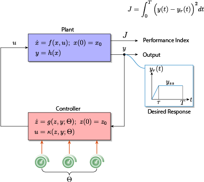
IEEE 58th Conference on Decision and Control (CDC), 2019
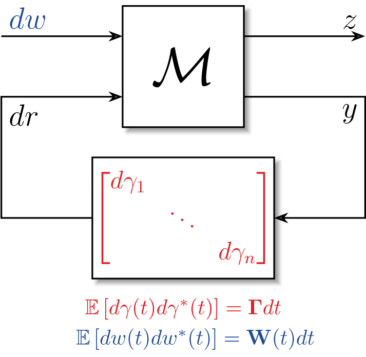
IEEE 57th Conference on Decision and Control (CDC), 2018
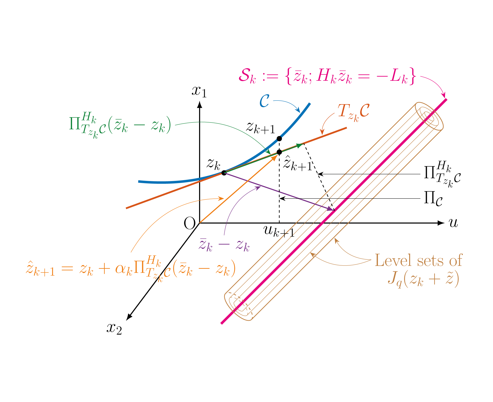
American Control Conference (ACC), 2018
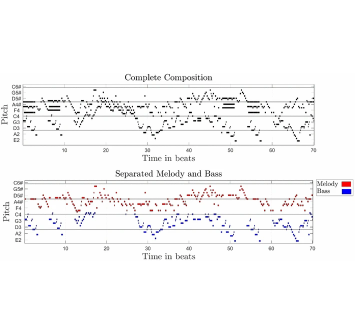
Complex and Intelligent Systems, 2017

IEEE 56nd Annual Conference on Decision and Control (CDC), 2017

American Control Conference (ACC), 2017

Biological Cybernetics, 2016
No publications match these filters.
* These authors contributed equally to this work.
Topics in Stochastic Stability, Optimal Control and Estimation Theory, PhD Dissertation at UCSB
Topics in Modeling of Cochlear Dynamics: Computation, Response and Stability Analysis, Master's Thesis at UCSB, 2017
Nonlinear, Nonlocal Two Dimensional Cochlear Modeling: Efficient Implementation and Model Order Reduction, Master's Thesis at AUB, 2013